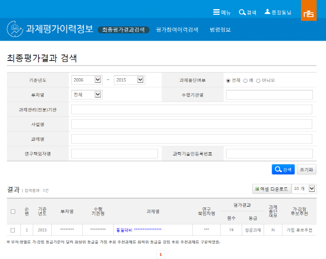
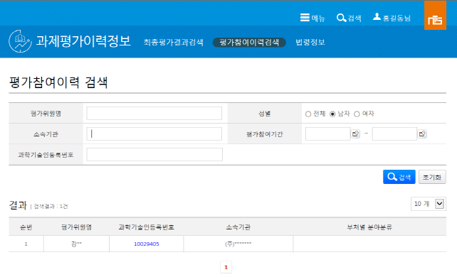

|  | - 화면 개요 기준년도, 부처명, 사업명, 과제명 등 검색조건을 이용하여 과제최종평가결과를 검색한다. |
| - 사용 설명 1. 검색조건을 입력한다. 2. [검색]버튼을 클릭하여 과제최종평가결과를 검색한다. 3. 하단의 검색결과 목록을 클릭하여 해당 과제의 상세내용 화면으로 이동한다. |
|
| - 항목설명 · 기준년도 : 조사분석 제출년도 · 과제중단여부 : 과제 중단 여부 · 부처명 : 연구개발사업의 기획, 평가 및 관리에 관한 제반사항을 주관하는 중앙행정기관의 명칭 · 과제관리(전문)기관 : 해당 사업의 과제 및 성과정보를 등록·관리하는 기관의 명칭 · 사업명 : 사업명(세부사업코드에 대한 사업명칭,국가연구개발사업 조사․분석의 소분류 사업명) · 과제명 : 신청 및 협약 과제를 기준으로 국문 세부과제명을 정식명칭(국문과제명과 영문과제명을 구분하여 수집) · 연구책임자명 : 연구책임자의 인물명 · 수행기관명 : 연구개발과제를 주관하여 수행하는 기관 명칭을 정식명칭(Full Name)으로 기재 · 점수 : 각 기관별 평가등급기준코드에 따른 최종평가 점수 · 등급 : 각 기관별 평가등급기준코드에 따른 최종평가 등급 |
|  | - 화면 개요 평가위원명, 성별, 소속기관 등 검색조건을 이용하여 평가위원의 과제평가참여 이력을 검색한다. |
| - 사용 설명 1. 검색조건을 입력한다. 2. [검색]버튼을 클릭하여 평가위원 정보를 검색한다. 3. 하단의 검색결과 목록을 클릭하여 해당 평가위원의 상세내용 화면으로 이동한다. |
|
| - 항목설명 · 평가참여기간 : 평가위원의 과제평가 참여 년월 · 부처별 분야분류 : 과제 평가위원의 부처별 전문분야 분류 |